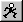

Skeletal mode allows you to create actions that require the manipulation of
the bones placed in an object. Individual bones can be locked, translated,
scaled, and rotated over time. Skeletal mode is also where stride length is set to
help keep characters feet from slipping along the path they are traveling on.
Walking is an example of skeletal motion.
Related Topics:
Skeletal
Modeling Mode
Bones Mode
Muscle Mode